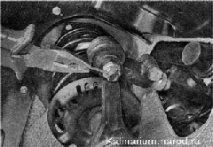
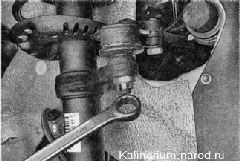
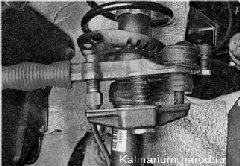
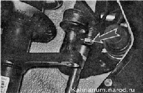
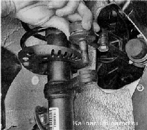

Наконечник рулевой тяги - заменаСнятие Для выполнения работы потребуется съемник шаровых шарниров. 1. Подготавливаем автомобиль к выполнению работы. 2. Снимаем переднее колесо со стороны заменяемого наконечника. 3. Металлической щеткой очищаем резьбовые соединения наконечника от грязи и обрабатываем их проникающей смазкой. 4. Пассатижами выпрямляем и вынимаем шплинт из отверстия шарового пальца тяги. 5. Накидным ключом на 19 мм отворачиваем корончатую гайку пальца. 6. Съемником выпрессовываем палец из отверстия поворотного кулака стойки передней подвески. 7. Торцовым ключом на 17 мм ослабляем затяжку стяжного болта наконечника. 8. Шлицевой отверткой разжимаем фланец наконечника. 9. Вращая наружный наконечник и считая количество оборотов, свинчиваем наконечник с тяги (если регулировочная втулка начинает вращаться вместе с наконечником, удерживаем ее рожковым ключом на 27 мм). Количество сделанных оборотов считаем для того, чтобы при сборке приблизительно выставить схождение колес (например, чтобы доехать до регулировочного стенда). Установка 1. Покрываем резьбовую часть нового наконечника пластичной смазкой Литол-24 или подобной. 2. Наворачиваем новый наконечник на регулировочную втулку, удерживая ее рожковым ключом на 27 мм. Для приблизительного сохранения схождения колес новый наконечник заворачиваем в муфту на то же количество оборотов, которое было сделано при отворачивании старого наконечника. 3. Вставляем палец в отверстие поворотного рычага стойки и заворачиваем корончатую гайку. 4. Затягиваем гайку пальца моментом 27,1 - 33,4 Н-м (2,83,4 кгс-м) и доворачиваем ее до совмещения отверстия в пальце с ближайшей прорезью в гайке. 5. Шплинтуем гайку (вставляем шплинт в палец и разводим концы шплинта в разные стороны). 6. Затягиваем стяжной болт фланца наконечника 19,1 —30,9 Н-м (2,0-3,2 кгс~м). После замены наконечника необходима регулировка схождения колес на СТО. |